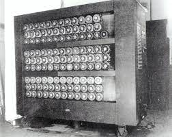

Alan Mathison Turing (Londres, 23 de junho de 1912 — Wilmslow, Cheshire, 7 de junho de 1954) foi um matemático,[1] cientista da computação, lógico, criptoanalista, filósofo e biólogo teórico britânico. Turing foi altamente influente no desenvolvimento da moderna ciência da computação teórica, proporcionando uma formalização dos conceitos de algoritmo e computação com a máquina de Turing, que pode ser considerada um modelo de um computador de uso geral.[2][3][4] Ele é amplamente considerado o pai da ciência da computação teórica e da inteligência artificial.[5] Apesar dessas realizações ele nunca foi totalmente reconhecido em seu país de origem durante sua vida por ser homossexual e porque grande parte de seu trabalho foi coberto pela Lei de Segredos Oficiais.

Durante a Segunda Guerra Mundial Turing trabalhou para a Escola de Código e Cifras do Governo (GC&CS) em Bletchley Park, o centro britânico de criptoanálise que produzia ultra inteligência. Por um tempo ele liderou a Hut 8, a seção responsável pela análise criptográfica naval alemã. Lá ele desenvolveu várias técnicas para acelerar a quebra das cifras alemãs, incluindo melhorias no método de bombardeio polonês antes da guerra, bem como uma máquina eletromecânica que poderia encontrar configurações para a máquina Enigma. Turing desempenhou um papel crucial na quebra de mensagens codificadas interceptadas que permitiram aos Aliados derrotar os nazistas em muitos compromissos cruciais, incluindo a Batalha do Atlântico, e ao fazê-lo os ajudou a vencer a guerra. Devido aos problemas da história contrafactual, é difícil estimar o efeito preciso que a inteligência ultra teve na guerra[6] mas foi estimado que este trabalho encurtou a guerra na Europa em mais de dois anos e salvou mais de 14 milhões de vidas
